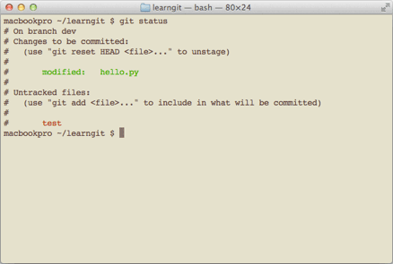

在安装Git一节中，我们已经配置了user.name和user.email，实际上，Git还有很多可配置项。
user.name
user.email
比如，让Git显示颜色，会让命令输出看起来更醒目：
$ git config --global color.ui true
这样，Git会适当地显示不同的颜色，比如git status命令：
git status

文件名就会标上颜色。
我们在后面还会介绍如何更好地配置Git，以便让你的工作更高效。